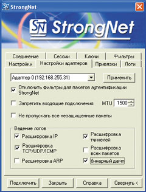
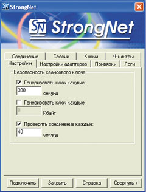
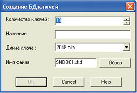

Ольга Толстунова,
компания "Физтех-софт"
olga@strongdisk.ru
Сегодня безопасность передачи информации стала одной из острейших мировых проблем, да и рынок средств защиты, по данным отечественных и зарубежных аналитиков, характеризуется небывалым подъемом. И порождено все это, скорее всего, интенсивным использованием Интернет-технологий, сравнительно дешевых и более удобных по сравнению с выделенными каналами. А поскольку количество пользователей Сети продолжает быстро расти, защита информации становится все более актуальной задачей для многих организаций, осознающих ценность своих информационных ресурсов.
В атмосфере бизнеса прочно поселилась тревога за сохранность корпоративных данных. И не случайно - передача конфиденциальной информации через публичную сеть, учитывая слабую защищенность Интернета, может оказаться серьезной угрозой для бизнеса. Разумеется, современные технологии в значительной мере решают эту задачу. Например, "наступление" IP-телефонии позволило отказаться от сложных аппаратно-программных средств, необходимых для защиты от прослушивания речи в обычных телефонных системах, и перейти к программным системам безопасности, которые надежно охраняют любые - как речевые, так и пакетные данные. Сегодня на ИТ-рынке немало продуктов, которые обеспечивают защиту информации от несанкционированного доступа и других угроз: для примера можно назвать ViPNet, Cisco PIX, Microsoft VPN, "Тропа-Джет" и другие. Все они высоко котируются на рынке и проверены временем, причем каждый продукт ориентирован на разные типы и размеры сети, обеспечивает разную степень защищенности. Кроме того, средства защиты различаются реализацией (программные, аппаратные или "смешанные") и, безусловно, ценой (программные средства дешевле). Так, Cisco Pix принадлежит к программно-аппаратным средствам защиты, поэтому стоимость этого межсетевого экрана существенно выше, чем многих программных продуктов.
Что же касается функциональности, то такие мощные системы, как ViPNet Tunnel или "Тропа-Джет", рассчитаны на применение в крупных территориально распределенных сетях. Они обладают самым широким спектром функций, вплоть до поддержки удостоверяющих центров для распределения ключей, и способны объединять географически удаленные филиалы предприятия в одну защищенную виртуальную сеть (VPN), даже если в состав такой VPN входят каналы общего пользования (в том числе Интернет).
Но в данной статье речь пойдет о менее масштабном продукте, рыночная ниша которого - сети малого и среднего размера, до нескольких десятков пользователей, - о программной системе защиты информации StrongNet.
Комплект ПО StrongNet защищает трафик между любыми компьютерами в локальной сети или подключенными к ней через Интернет, обеспечивая защиту с помощью шифрования данных в туннельном режиме. Это ПО, как и многие "старшие товарищи", использует механизм распределения ключей. Однако в StrongNet, в отличие от многих других систем, ключи распределяются между пользователями один раз - при установке и конфигурировании системы (без использования центров сертификации), что существенно упрощает работу, но в то же время накладывает ограничения на количество пользователей.
Заметим, что наиболее функционально "близкий" StrongNet продукт - это подсистема Microsoft VPN (встроенная в Windows), но у нашего "героя" есть ряд существенных преимуществ. Во-первых, в StrongNet применяются более криптостойкие алгоритмы шифрования; во-вторых, поддерживается сжатие данных при передаче; в-третьих - обеспечивается автоматическая смена ключа шифрования в процессе работы защищенного соединения, протоколирование трафика и сжатие передаваемой информации, что позволяет сократить объем трафика.
Технические возможности
ПО StrongNet работает на стандартном ПК под управлением Microsoft Windows NT/2000/XP/2003, объем дистрибутива составляет 1 Мбайт. Интерфейс StrongNet выполнен в виде простых форм, большинство полей которых заполняется путем выбора вариантов из ниспадающего списка. С помощью StrongNet можно реализовать различные функции безопасности: например, защитить трафик внутри локальных сетей, обеспечить защищенный доступ удаленных клиентов к корпоративной сети, создать встроенный персональный межсетевой экран. Передавая защищенные данные, Strong Net использует алгоритмы сжатия.
Локальный межсетевой экран - один из важнейших компонентов StrongNet; он выполняет фильтрацию входящих и исходящих IP-пакетов по определенным критериям (используемый сетевой протокол, IP-адрес источника и пункта назначения, номер порта источника и пункта назначения). Параметры фильтрации задаются для каждого адаптера, если таковых несколько.
Настройка конфигурации адаптеров дает возможность проводить дополнительную фильтрацию на каждом из них. Например, для защищенного соединения можно блокировать все входящие и исходящие незащищенные пакеты или запретить подключение других пользователей к ПК. В значительной мере обезопасить работу с защищенным соединением позволяет и хранение ключей аутентификации на электронных ключах, поддерживающих стандарт PKCS#11; среди них iKey 10хх/20хх, eToken R2/Pro, ePass 1000/2000.
Еще одна важная функция - строгий контроль трафика и действий пользователя (что может потребоваться, например, для отслеживания попыток несанкционированного доступа). Кроме того, StrongNet дает возможность вести системный журнал (лог-файл), сохраняя в нем записи о входящих и исходящих IP-пакетах, о пакетах TCP/UDP/ICMP, об APR-запросах, о пакетах, подвергающихся туннелированию, и обо всех прочих (рис. 1). При этом каждый тип данных сгруппирован по характерному признаку: входящий, исходящий, APR и т. д.
|  | Рис. 1. Настройки адаптеров и параметры записи в системный журнал.
|
Задачи и решения
Основная функция StrongNet - создание защищенного канала передачи данных между компьютерами локальной сети (в том числе и подключенными к ней удаленно через Интернет). Прежде всего отметим, что транспортируемая через этот канал информация кодируется с помощью симметричных алгоритмов шифрования. Кроме того, при установлении соединения StrongNet обеспечивает двустороннюю аутентификацию с помощью сеансовых ключей, используемых для шифрования трафика (рис. 2). Особенность программы - "прозрачность" ее работы для пользователя, который может даже не подозревать, что данные передаются в зашифрованном виде.
|  | Рис. 2. Начальный экран StrongNet.
|
При создании StrongNet перед ее разработчиками стояли три задачи:
- гарантировать конфиденциальность информации за счет ограничения доступа к передаваемому по каналу трафику - доступ получают только субъекты, обладающие соответствующими правами;
- обеспечить аутентификацию источника сообщений, чтобы исключить "бесправные" или вымышленные источники информации;
- гарантировать целостность данных, создав условия, при которых невозможна их модификация при передаче через защищенный канал.
Гарантия конфиденциальности передаваемых данных основана прежде всего на тотальном кодировании передаваемой по защищенному каналу информации с помощью симметричных алгоритмов шифрования. При этом сеансовые (симметричные) ключи шифрования передаются только после установления защищенного соединения и, в свою очередь, кодируются с использованием асимметричного алгоритма шифрования RSA (который в числе прочего позволяет аутентифицировать источник сообщений). Целостность данных обеспечивается за счет применения MAC-алгоритмов MD-5-HMAC, SHA1-HMAC.
Как известно, в современных VPN-продуктах чаще всего реализуется один из двух способов распределения ключей: с помощью центра генерации или посредством центров сертификации. Поскольку система StrongNet ориентирована на малые и средние сети, разработчики сочли оптимальным решением предварительное распределение ключей с помощью центра генерации.
Данный способ, во-первых, прост в применении и удобен для системных администраторов, а во-вторых, такое решение дает возможность пользователям сети к моменту установления соединения уже получить все необходимые ключи. Кроме того, в зависимости от настроек конкретного ПК сеансовые ключи (или ключи шифрования) могут автоматически меняться либо по истечении некоторого заданного пользователем времени, либо при достижении определенного объема переданной информации.
Заметим, что конфигурирование программы требует выбора некоторых параметров в меню развернутого режима настройки (кнопка "Развернуть"). В этом контексте StrongNet определяются алгоритмы кодирования, которые будут использоваться, параметры внутреннего межсетевого экрана, фильтров и трафика, порядок и периодичность смены сессионных ключей кодирования и некоторые другие переменные. После определения основных настроек с программой может работать любой пользователь, задавая в дальнейшем только IP-адрес компьютера, с которым необходимо установить соединение (упрощенный режим работы).
ПО StrongNet поддерживает следующие симметричные алгоритмы кодирования трафика: 3DES, IDEA-128, CAST-128, BlowFish-128, RC5-128, AES-128, SAFER-128, BlowFish-448, AES-256, GOST-256 (число после названия алгоритма означает длину ключа). При настройке по умолчанию используется алгоритм AES-128. Сегодня длина ключа симметричного шифрования в 128 бит считается вполне достаточной для надежной защиты. Тем не менее многие специалисты рекомендуют использовать алгоритмы с 256-битным ключом, поскольку считают, что они могут гарантировать безопасность и на будущее - как минимум в ближайшие 15-20 лет.
"Ключевые" подробности
Прежде чем начинать работу в режиме защищенного канала, системе необходимо сгенерировать и распределить между пользователями ключи таким образом, чтобы у каждого был полный набор, содержащий его личный ключ и открытые ключи других пользователей StrongNet - его корреспондентов. Для установления соединения со своими корреспондентами пользователю нужен набор ключей (если открытый ключ какого-либо сотрудника не входит в набор, то и связь с ним будет невозможна). Такой набор может храниться либо в файле, либо в электронном ключе.
Генерация набора ключей возложена на программный комплекс StrongNet KeyGen Center, входящий в комплект поставки StrongNet. KeyGen Center по сути строит базу данных (БД) ключей, а затем на ее основе составляет наборы. Генерация ключей происходит при создании БД, т. е. всего один раз.
Для создания БД ключей (рис. 3) нужно прежде всего задать их количество (равное предполагаемому количеству пользователей системы), длину асимметричного ключа, а также придумать название и имя файла БД. Заметим, что с точки зрения KeyGen Center понятия "ключ" и "пользователь" тождественны, поскольку одному ключу соответствует один и только один пользователь, и наоборот. Для набора ключей каждого пользователя определяется индивидуальное место хранения (файл или электронный ключ); при этом в ПО предусмотрена не только автоматическая загрузка ключа при запуске операционной системы, но и автоматический разрыв соединения при изъятии электронного ключа.
|  | Рис. 3. Рабочий экран для создания БД ключей.
|
После генерации и распределения ключей система готова к работе. По умолчанию программа запускается при запуске Windows. При вызове появляется окно StrongNet для задания удаленного VPN-соединения, содержащее только поле для ввода IP-адреса удаленного пользователя, с которым необходимо установить связь.
Заметим, что при установке полнофункциональной версии StrongNet никто, включая разработчиков системы, не может получить доступ к защищенной информации, не владея паролем и внешним ключом.
Авторизация по открытому ключу
Перед открытием защищенного соединения необходимо убедиться, что обе стороны имеют право на установление защищенного соединения. Этой цели служит авторизация, в данном случае авторизация по открытому ключу (RSA) длиной от 2048 до 4096 бит. Каждый абонент VPN имеет некоторый набор открытых ключей других пользователей системы и еще собственные личный и открытый ключи. Открытые (публичные) ключи применяются для шифрования данных, а личные - для расшифровки. Непосредственное шифрование трафика выполняется по тому типу симметричного алгоритма шифрования, который выбран администратором безопасности при установке и конфигурировании ПО.
Обмен пакетами авторизации между корреспондентами происходит следующим образом. Инициирующая защищенное соединение сторона посылает корреспонденту пакет запроса, содержащий сгенерированный ключ шифрования трафика инициатора соединения (ключ 1). Удаленный корреспондент должен расшифровать и проверить пакет, а затем сгенерировать свой ответ в формате пакета ответа на авторизацию, где записывается второй сгенерированный ключ шифрования трафика (ключ 2) и подтверждение получения ключа 1 от инициатора. При этом подтверждение формируется в виде значения хеш-функции ключа 1 с инициализационным вектором, равным ключу 2. Длина ключа 1 определяется инициатором соединения, исходя из настроек сессии соединения, а длина ключа 2 принимается равной длине ключа 1.
Организация туннелей обмена
Следует отметить, что с целью повышения криптостойкости защиты обмен сообщениями абонентов VPN организован с помощью двух сессионных ключей (которыми корреспонденты обмениваются в процессе авторизации). Время активности сессии задается до открытия защищенного соединения в настройках конфигурации системы и обычно устанавливается в пределах 10-60 мин, в зависимости от важности защищаемой информации, трафика и т. д.
После завершения процедуры авторизации инициатор вводит IP-адрес компьютера, с которым требуется установить соединение, и выбирает сетевой адаптер из предлагаемого списка (по умолчанию Adapter 0 соответствует модемному dial-up-соединению).
После завершения авторизации открываются туннели обмена. Правила отбора туннелей подразумевают шифрование всего трафика любых IP-протоколов между сторонами, и только этого трафика. Пакеты, не принадлежащие IP-протоколам, могут либо беспрепятственно проходить выше, либо задерживаться. В качестве туннельных ключей шифрования инициатор использует свой сгенерированный ключ (ключ 1 в нашей терминологии), а удаленный пользователь - свой (ключ 2). Ключи шифрования действуют только в течение периода активности сессии; по истечении промежутка времени, равного тайм-ауту сессионного ключа, система их изменяет.
Для контроля активности сессий и предотвращения так называемых "мертвых" (аварийно завершенных) сессий существует процедура квитирования, которая заключается в обмене пакетами подтверждения каждые 20-40 с в ходе сессии (точное время квитирования сессии, idle time, определяется во время авторизации). По истечении idle time без подтверждения активности происходит принудительный разрыв соединения.
Механизм квитирования организован следующим образом: в начале сессии счетчики idle time тайм-аута обеих сторон обнуляются. Пороговое значение отключения для каждой из сторон устанавливается равным времени начала защищенного обмена. Пакет подтверждения активности генерируется и посылается инициатором соединения по истечении половины промежутка idle time. Если ответ не поступает в течение 5 с, процедура повторяется. После трех попыток или завершения периода idle time происходит принудительное отключение сессии с посылкой подтверждения. Удаленный корреспондент (хост) ожидает пакета запроса и при его получении сбрасывает счетчик idle time в ноль, посылая при этом пакет подтверждения инициатору обмена. Как только idle time сессии превысит пороговое значение отключения, происходит разрыв соединения.
* * *
Коммерческие продажи ПО StrongNet начались недавно, в конце 2003 г., однако система уже нашла "своего пользователя", прежде всего в тех сетях, где ранее использовались продукты "Физтех-софт" - StrongDisk Pro и StrongDisk Server (таковых к началу 2004 г. насчитывалось около 40). Следует подчеркнуть, что продукт востребован в основном на предприятиях с небольшими и среднего размера сетями (не более 100 рабочих станций). Главным же преимуществом продукта перед конкурентами стала не столько цена (49 долл. за одно рабочее место), сколько дополняющая VPN функция шифрования трафика.
Демонстрационную версию StrongNet можно загрузить с сайта компании "Физтех-софт" (http://www.strongdisk.ru). Она работает точно так же, как и полнофункциональная, но не обеспечивает полноценную защиту информации, поскольку установленные в ней алгоритмы недостаточно стойки.
Производительность алгоритмовКроме надежности, у алгоритмов шифрования есть еще один параметр, определяющий производительность их работы и принципиально важный при выборе ключа, - скорость кодирования/декодирования. Задача пользователя - выбрать оптимальный алгоритм для каждого конкретного случая. При этом можно не заниматься оптимизацией напрямую, а выбрать такой, для которого скорость шифрования и записи на диск будут существенно выше пропускной способности самой сети или каналов подключения к ней. Например, при модемном подключении скорость передачи, как правило, не превышает 56 кбит/с, что существенно ниже производительности алгоритмов. Что же касается локальных сетей, то их пропускные способности в 10, 100 или 1000 Мбит/с зависят от применяемого сетевого оборудования и на деле ограничиваются скоростью передачи, составляющей 70-90% от максимума. При этом следует помнить, что поскольку передача данных - двухуровневый процесс, то реальная скорость передачи будет ограничена минимальным значением скорости (шифрования или дешифрования). Тестирование алгоритмов, реализованных в StrongNet, проводилось в системах на основе Intel Pentium 4 с частотой 2,1 ГГц под управлением ОС Windows XP SP1; результаты его приведены в таблице. Производительность некоторых алгоритмов шифрования
|
||||||||||||||||||||||||||